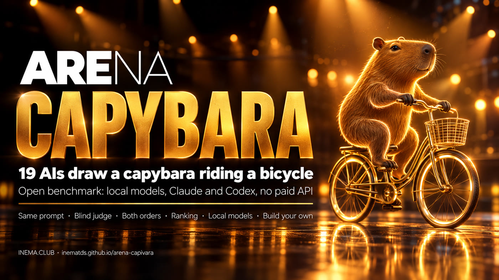
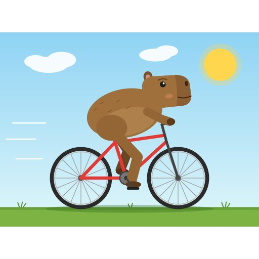
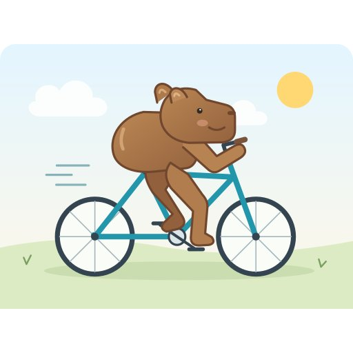
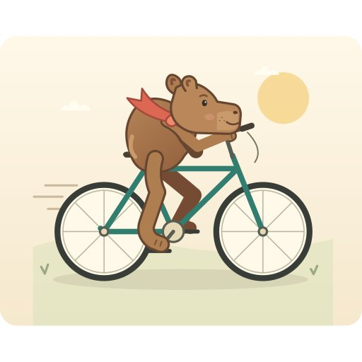
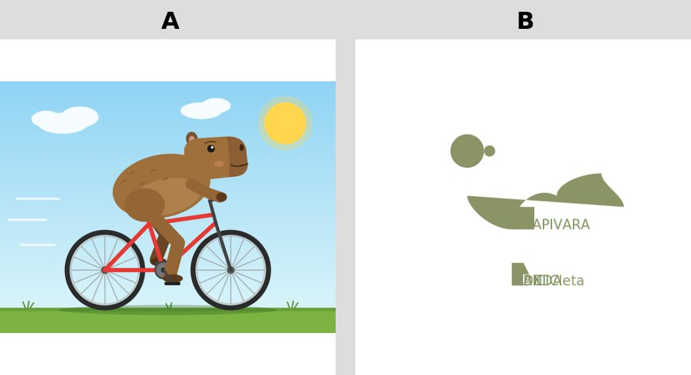
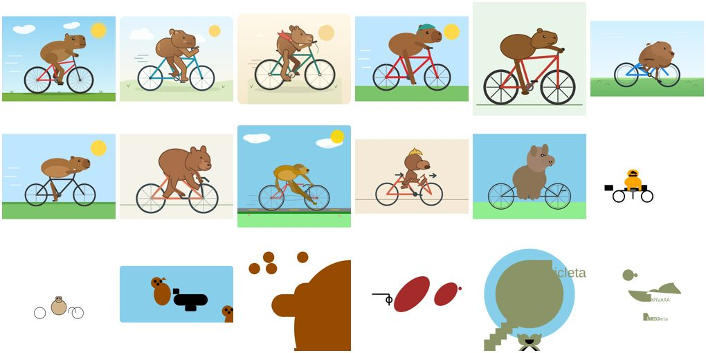

We asked 19 models to draw the same thing in SVG code: 10 running on a computer and 9 through Claude and ChatGPT subscriptions. A judge compared them head to head without knowing who made what. The kit is open: run it with your own models.

Simon Willison evaluates each new model by asking it to create “an SVG of a pelican riding a bicycle.” He doesn’t trust leaderboards; he prefers his own test, one he understands himself. Google already showed his pelican in a keynote, so we changed the animal.
A text model doesn’t draw: it writes code. Bicycles are hard to recall, capybaras are hard to draw, and capybaras don’t pedal. You can immediately see who understands shape and composition.
The judge sees only “A” and “B,” with no names. Each pair appears twice, with the sides swapped, to cancel out the tendency to prefer the left. A second judge from another company rechecks a sample.
Local models run through Ollama; Claude and GPT use the claude and codex CLIs with the subscription you already pay for. No API key required.
Claude Fable 5.1 won 97% of matchups. The surprise: Qwen 3.8 27B, running on a computer, came in 5th out of 18, ahead of GPT-5.5 and Claude Sonnet 5.5. Command R 35B did not produce valid SVG. The second judge (GPT-6 Luna) agreed with the first in 92% of the 64 matchups it rechecked.





Each step saves its output to resultados/ and skips work that is already done. You can stop and continue later.
Sends the same prompt to each model in modelos.json, saves the raw response, and extracts the <svg>. Local models run one at a time to fit in memory.
Converts SVG to PNG without fetching anything from the internet, arranges images as A|B, and asks the judge for JSON with the winner and the reason.
Win rate (the most honest measure), average ELO from 200 randomized orderings, side bias, and agreement between judges. Generates the public page in PT, EN, and ES.
Only the first item is required. Use the engines you have; remove the others from modelos.json.
With cairosvg (SVG to PNG) and Pillow.
pip install cairosvg pillowAny model you’ve already downloaded. An 8B runs on a laptop; a 70B needs around 48 GB of memory.
ollama pull llama3.1:8b ollama list
Optional. Log in with your subscription; the kit calls claude -p and codex exec.
claude --version codex --version
Start small: two or three models. Then add more.
The results from our round are included in resultados/. Delete the folder if you want to start from scratch.
git clone https://github.com/inematds/arena-capivara cd arena-capivara rm -rf resultados && mkdir -p resultados/{svgs,respostas,png,pares} # optional: clean arena
Edit arena/modelos.json. Each line has a motor (ollama, claude, or codex) and the modelo name, just as it appears in ollama list or the CLI.
{"id": "llama3-1-8b", "motor": "ollama", "modelo": "llama3.1:8b",
"rotulo": "Llama 3.1 8B", "familia": "Local"}
Claude and Codex run in parallel; local models run one at a time. If a model does not return SVG, it is recorded as “no output,” which is also a result.
python3 arena/gerar.py # or --so llama3-1-8b claude-haiku-4-5
python3 arena/renderizar.py # "N valid images, M matchups created"
The default is Claude Sonnet 5.5. The second judge rechecks a sample so you can see how much to trust the first.
python3 arena/julgar.py --paralelo 4 python3 arena/julgar.py --juiz codex --modelo gpt-6-luna --amostra 60
python3 arena/ranking.py --tabela # table in terminal + resultados/ranking.json python3 arena/galeria.py # resultados/index.html (+ en/ es/) python3 -m http.server 8000 # open http://localhost:8000/resultados/
The lesson from the talk isn’t “model X draws better.” It’s this: don’t outsource your model choice to a leaderboard. Build a small test you understand and run it whenever a new model comes out.
arena/prompt.txt.resultados/respostas/).Change the text in arena/prompt.txt and the judge’s question (PERGUNTA in arena/julgar.py). If the output is text instead of a drawing, skip renderizar.py and have the judge read both responses. To use Claude Code’s own history as a test, see personal-benchmark.
The arena is open. Submit your round as a pull request.